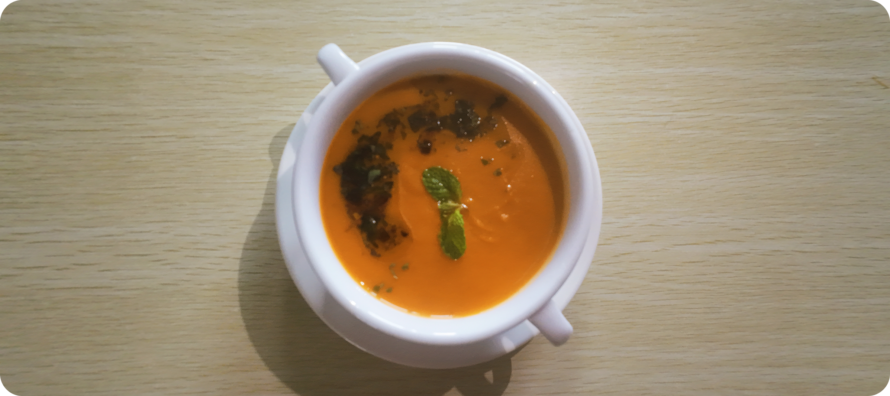
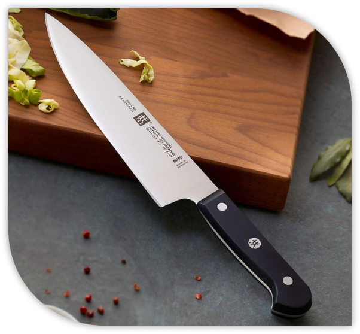
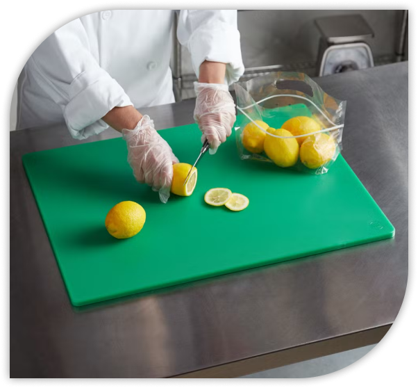
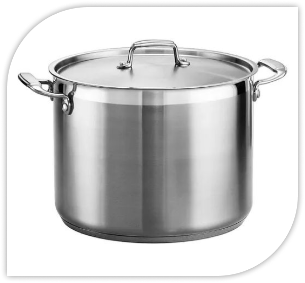
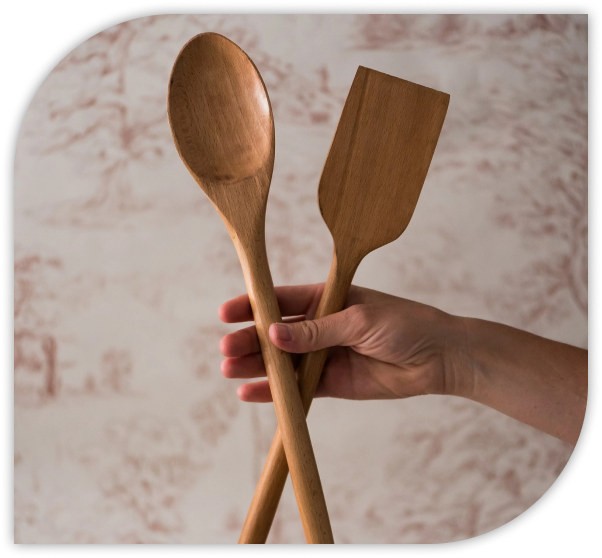
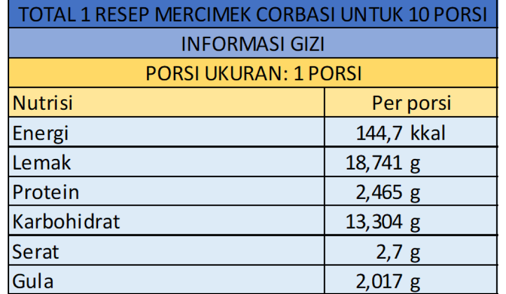

Sejarah
Mercimek Çorbası adalah sup lentil yang sangat populer di Turki. Hidangan ini dikenal sebagai comfort food yang mudah ditemui di rumah, restoran, hingga kantin, terutama saat cuaca dingin atau sebagai menu pembuka.

Sejarah
Mercimek Çorbası adalah sup lentil yang sangat populer di Turki. Hidangan ini dikenal sebagai comfort food yang mudah ditemui di rumah, restoran, hingga kantin, terutama saat cuaca dingin atau sebagai menu pembuka.
Teksturnya halus dan creamy, biasanya disajikan dengan perasan lemon serta taburan rempah agar rasanya lebih segar.
Budaya
Soup Mercimek sering hadir sebagai hidangan pembuka di banyak jamuan makan di Turki. Karena sederhana dan menghangatkan, sup ini juga populer saat Ramadan untuk berbuka, serta menjadi pilihan praktis untuk makan sehari-hari.
Bahan-Bahan
Minyak zaitun
Bawang putih
Wortel
Kentang
Pasta tomat
Lentil merah
Air
Kunyit bubuk
Jinten bubuk
Bubuk cabai
Daun mint
Lemon
Bawang bombay
Garam
Filosofi bahan dan rasa
Soup Mercimek menonjolkan filosofi kesederhanaan yang bergizi: bahan-bahan mudah didapat, dimasak perlahan, lalu dihaluskan untuk tekstur lembut yang menenangkan.

Lentil merah
Dalam filosofi kuliner Turki, lentil melambangkan kesederhanaan, keberlimpahan, dan ketahanan hidup karena merupakan bahan makanan yang murah, mudah didapat, dan sangat bergizi.
Bawang dan Sayuran
Bawang (putih dan bombay), wortel, atau kentang yang sering digunakan dalam sup ini melambangkan dasar kehidupan dan keseimbangan alam. Dalam memasak, bahan-bahan ini memberikan rasa alami yang menyeimbangkan rasa lentil dan menciptakan harmoni rasa dalam hidangan.
Minyak zaitun
Minyak zaitun melambangkan kemewahan sederhana dalam dapur Turki. Minyak zaitun juga memberikan kedalaman rasa dan tekstur yang lebih lembut pada sup.
Rempah
Rempah ringan (jinten dan kunyit) memberikan sentuhan hangat yang melambangkan kehangatan dan keramahan dalam budaya makan Turki. Rempah ini juga memperkuat aroma dan karakter sup tanpa menutupi rasa utama lentil.
Lemon
Perasan lemon yang biasanya ditambahkan sebelum disajikan memiliki filosofi keseimbangan dan kesegaran. Rasa asam dari lemon membantu menyeimbangkan rasa gurih dan lembut dari sup, sekaligus memberi sensasi segar di akhir.




Alat yang di gunakan
Cara Memasak
